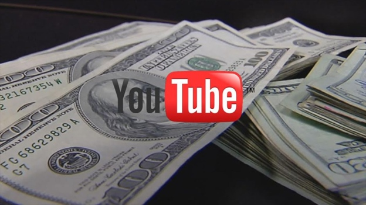
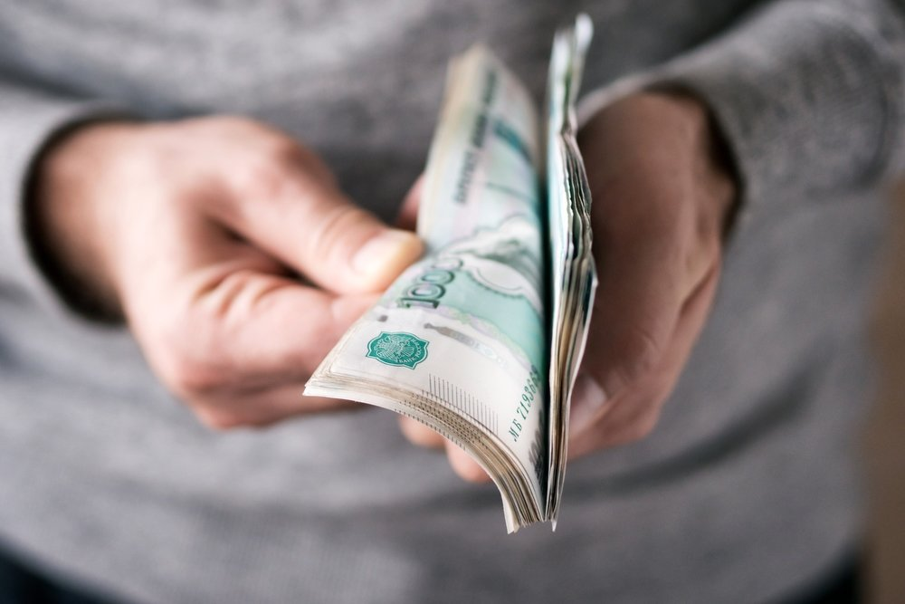

Кто я такой?
- Ютубер, предприниматель. В общей сумме 200.000+ подписчиков.
- 30 млн просмотров на ютуб.
- Сеть американских каналов.
- Работал с ТикТок.
- Консультировал блогеров 100-150к подписчиков
Реалии 2020 года
Сейчас очень важно внимание. Если у тебя нет внимания, то каким бы ты экспертом не был, что бы ты не делал – у тебя не будет клиентов. Чем меньше людей тебя знает – тем меньше
денег ты зарабатываешь.
Внимание = клиенты и люди = возможности = большие деньги
Естественно, бизнесы готовы тратить свои деньги на рекламу, но сейчас то время, когда люди доверяют людям.
Реклама уже всем надоела, она постоянно мелькает, ее все пропускают. Но здесь тебя знают, как человека, как друга. И они очень легко покупают любые твои продукты и услуги. И ты сможешь продавать кучу своих продуктов: Дневник Хача – шаурму, Алишер – ресторан, Ларин – бургер.
Плюс у блогеров есть доход с монетизации: заливаешь ролики – получаешь денежки.
При этом монетизация – не самая прибыльная вещь. Есть свои продукты, интеграции, проекты.
Не нужна профессиональная камера. Сейчас достаточно камеры айфона
Ролик снят на фронтальную камеру Iphone
Можно снимать игровой канал.
Можно снимать на старую камеру.
Можно показывать картинки с интернета и на фоне говорить (апвоуд, айтипедия)– можно делать за кадром.
Можно собирать видео из американских роликов.
Монтировать видео можно на каждом телефоне.
Для ютуба нужно только нарезать и этого будет достаточно, чтобы набрать подписчиков.

Зарабатывать на ютубе легко, здесь вообще не нужны вложения
Когда вы покупаете бизнес, то проблемы: с налоговой, доставкой, проходимостью, клиентами, сотрудниками, головняком. А все, что нужно для заработка хотя бы 50к в ютубе - самый простой телефон. Ты можешь работать из любой точки и производить ролики там, где ты хочешь. Про то, про что хочешь.
НЕ НУЖНО ОБРАЗОВАНИЕ
Чтобы понять, какие ролики набирают просмотры и что надо снимать – достаточно 30 дней. Научиться правильно делать видео можно за 30 дней. Уже через месяц ваши ролики могут начать стрелять и будут появляться первые серьезные просмотры. Как это было у моих учеников.
НЕ НУЖНА МОЩНАЯ ТЕХНИКА
Монтировать можно в стандартном редакторе на айфоне и на любом редакторе на компе. Любой средний компьютер и телефон потянет монтаж ролика.
НЕВАЖНО, СКОЛЬКО ТЕБЕ ЛЕТ
Чтобы устроиться на работу за минимальную зарплату и опыт, нужно пройти 11 лет школы и 4 года ВУЗа. Ты же знаешь, как после всего этого пройденного пути тяжело будет найти рабочее место по профессии, которая понравится? На ютубе же ты сам себе начальник. Ты снимаешь то, что тебе в кайф. И на это привлекаются такие же люди, которым это интересно. А они – твои будущие клиенты, сотрудники, партнеры, покупатели. Но если у тебя плохая камера или ты не хочешь снимать себя - ты можешь зарабатывать ровно столько же, сколько зарабатывают блогеры. Делай игровой канал, перевод, озвучку, монтаж. Стань даже ПРОДЮСЕРОМ других каналов! Для этого нужен успешный опыт хотя бы с одним каналом Не страшна конкуренция. За последний год стало на 25% больше ютуб-каналов. Почему так происходит? Потому что зарабатывать можно даже начиная с 5 тысяч подписчиков. Люди только сейчас начинают это
понимать и заходить на ютуб. Поэтому именно сейчас идеальное время для входа, пока конкуренция не такая большая. Самые ранние успеют забрать себе все сливки.
НЕВАЖНО, СКОЛЬКО ТЕБЕ ЛЕТ
Получаешь деньги в долларах. Ты не зависишь от курса рубля. Даже если у всех деньги уменьшаются - у тебя увеличиваются :) Для более взрослых: Сейчас все предприниматели и специалисты начинают активно продвигать свой бизнес через видео. Сколько примеров таких людей вокруг? Просто сотни. Дело в том, что это приносит огромное кол-во клиентов. Даже если твой ролик посмотрит 5000 людей, хотя бы 100-500 человек заинтересуются твоим продуктом. И часть из них станет покупателями. И, скорее всего, постоянными. Самое прикольное, что доход с монетизации на ютубе постоянно растет (в 2-3 раза за два года), потому что сейчас все идут на ютуб. Если раньше легко можно было зарабатывать 30.000р-60.000р только на монетизации, сейчас это переросло в 60.000р-150.000р. И если Игорь Рыбаков, Евгений Черняк (ребята из Форбс), телевидение (Что Было Дальше - проект ТНТ), другие люди идут на ютуб - значит, сейчас самое время. Потому что крупные компании и миллиардеры не могут ошибаться.
ИСТОЧНИКИ:
- Монетизация
- Продажа рекламных интеграций
- Сотрудничество с компаниями/амбассадорство
- Продажа своих продуктов или услуг
- Монетизация на американских канала

КАК ЗАРАБОТАТЬ 1000$ НА ЮТУБЕ. СКОЛЬКО НУЖНО ПОДПИСЧИКОВ, ЧТОБЫ НАЧАТЬ ЗАРАБАТЫВАТЬ?
Свой продукт/реклама 5000 просмотров. 5 продаж по 200$ = 1000$ И это без монетизации:) которая за качественную аудиторию может приносить по 15-20 долларов за тысячу просмотров.
В КАКИХ НИШАХ МОЖНО НАБРАТЬ ПРОСМОТРЫ?
- Адвокат
- Юрист
- Художник
- Программист
- Футболист
- Музыкант
- Костоправ город Уфа
- Художник
- Игрок в игры
- Строитель
- Ученик
- Студент
- Водитель
- Риэлтор
- Владелец бизнеса
- Учитель
- Грузчик
- Стюард
- Танцор и т.д.
Абсолютно в любой нише можно набирать просмотры, главное - знать компоненты вирусных роликов и некоторые другие правила, которые я рассказываю на своем курсе.
ПОЧЕМУ ВСЕ ИМЕННО ТАК? ЕСТЬ ЛИ ЗДЕСЬ ОБМАН?
Да на самом деле нет. Просто многие люди до сих пор не смогли понять, насколько в ютубе просто можно зарабатывать. А те, кто понял, просто продолжают молча делать контент, зарабатывая сотни тысяч и миллионы. И блогеры - это не одаренные люди. Они просто в свое время начали снимать свои первые ролики, которые привели их к жизни мечты. Ты можешь обучиться этому за 1-2 месяца и начать зарабатывать от 1000$, стараясь в разы меньше, чем на обычной работе
ВАШ ОБЩИЙ ПЛАН ДЛЯ СТАРТА:
ШАГ 1. ПОНЯТЬ, КАК ДЕЛАЮТСЯ ВИРУСНЫЕ РОЛИКИ
В любых нишах есть свой способ производства вирусного ролика. Ты можешь сделать по смыслам два абсолютно одинаковых ролика, но один наберет 10 просмотров, а другой 500.000. В чем секрет? В компонентах вирусности. Это все я разбираю на своем курсе Время выхода на этот уровень: 2 недели Доход: 0
ШАГ 2. НАЧАТЬ ПРОИЗВОДИТЬ РОЛИКИ
Нужно сделать хотя бы 5 роликов правильно, с применением знаний, чтобы набраться опыта. Один из них 100% наберет больше, чем другие. Тогда ты начинаешь бить именно в ту тему, которая набрала. Таким образом наращивая себе подписчиков, просмотры, и деньги. К слову, можно даже себя не снимать. На американских каналах у меня ролики набирают хорошие просмотры, хотя это просто монтаж. Время выхода на этот уровень: 30 дней Доход: 20к+
ШАГ 3. ТЕПЕРЬ, КОГДА ТЫ ЗНАЕШЬ, В ЧЕМ БЫЛ СЕКРЕТ
Ты просто делаешь ролики, смотришь на статистику, начинаешь масштабироваться. Повторяешь предыдущий шаг. Ты не поверишь, но рекламодатели найдут тебя САМИ, напишут, и предложат деньги за рекламу на твоем канале. Могут купить даже оптом 10-15 реклам, переведя деньги сразу на карту. Время выхода на этот уровень: 2 недели Доход: 30-50к
ШАГ 4. УПОР НА ЗАРАБОТОК
Самый стандартный новичок легко может набирать 30к просмотров в месяц. Но даже если вы набираете 5000 просмотров, то должны понимать, что это 5000 человек заинтересованных вашей темой. Хотя бы 50 из них точно заинтересуется продуктом и 10 из них купит. Если услуга стоит 15000 - то вы заработаете 150к только с этого. Но представьте, если вы риэлтор. Вы можете даже не владеть квартирой - снять про нее видео - сделать хотя бы одну продажу и получить комиссией 300к-600к. А если просмотров будет 100к? А если 300? Зарабатывать можно будет 2-3млн Если хотите зарабатывать на интеграциях - можете продать 4 рекламы по 15000 (за столько я продал первую рекламу на маленьком канале). Это уже будет 60 тысяч. Сделать 4 интеграции – 60к заработали. Время выхода на этот уровень: 2 недели Доход: 100-300к Плюс, есть монетизация (на американском она супер высокая.
И вот спустя два месяца вы можете зарабатывать 50к-70к и уже уволиться с работы
ЧТО КОНКРЕТНО НУЖНО УМЕТЬ:
1. Правильно исследовать ютуб, знать как находить тренды в разных нишах.
2. Выбрать нишу, которая подойдет вам больше всего.
3. Знать принципы и секреты создания вирусных роликов.
4. Правильно делать оптимизацию роликов (название, описание, теги).
5. Быть собой, креативить.
6. Производить ролики в любом месте и в любое время.
ДО КУРСА:
- Работает официантом
- Не может полноценно заниматься тем, что любит
- Снимает на ютуб уже 6 лет без результата
ПОСЛЕ КУРСА:
- Доход 90к
- Ушел с работы
- Начал зарабатывать на любимом деле - музыке
- Ролики собирают по 500к просмотров
Зарабатывать на ютубе легко, здесь вообще не нужны вложения
Когда вы покупаете бизнес, то проблемы: с налоговой, доставкой, проходимостью, клиентами, сотрудниками, головняком. А все, что нужно для заработка хотя бы 50к в ютубе - самый простой телефон. Ты можешь работать из любой точки и производить ролики там, где ты хочешь. Про то, про что хочешь.
НЕ НУЖНО ОБРАЗОВАНИЕ
Чтобы понять, какие ролики набирают просмотры и что надо снимать – достаточно 30 дней. Научиться правильно делать видео можно за 30 дней. Уже через месяц ваши ролики могут начать стрелять и будут появляться первые серьезные просмотры. Как это было у моих учеников.
НЕ НУЖНА МОЩНАЯ ТЕХНИКА
Монтировать можно в стандартном редакторе на айфоне и на любом редакторе на компе. Любой средний компьютер и телефон потянет монтаж ролика.
НЕВАЖНО, СКОЛЬКО ТЕБЕ ЛЕТ
Чтобы устроиться на работу за минимальную зарплату и опыт, нужно пройти 11 лет школы и 4 года ВУЗа. Ты же знаешь, как после всего этого пройденного пути тяжело будет найти рабочее место по профессии, которая понравится? На ютубе же ты сам себе начальник. Ты снимаешь то, что тебе в кайф. И на это привлекаются такие же люди, которым это интересно. А они – твои будущие клиенты, сотрудники, партнеры, покупатели. Но если у тебя плохая камера или ты не хочешь снимать себя - ты можешь зарабатывать ровно столько же, сколько зарабатывают блогеры. Делай игровой канал, перевод, озвучку, монтаж. Стань даже ПРОДЮСЕРОМ других каналов! Для этого нужен успешный опыт хотя бы с одним каналом Не страшна конкуренция. За последний год стало на 25% больше ютуб-каналов. Почему так происходит? Потому что зарабатывать можно даже начиная с 5 тысяч подписчиков. Люди только сейчас начинают это
понимать и заходить на ютуб. Поэтому именно сейчас идеальное время для входа, пока конкуренция не такая большая. Самые ранние успеют забрать себе все сливки.
НЕВАЖНО, СКОЛЬКО ТЕБЕ ЛЕТ
Получаешь деньги в долларах. Ты не зависишь от курса рубля. Даже если у всех деньги уменьшаются - у тебя увеличиваются :) Для более взрослых: Сейчас все предприниматели и специалисты начинают активно продвигать свой бизнес через видео. Сколько примеров таких людей вокруг? Просто сотни. Дело в том, что это приносит огромное кол-во клиентов. Даже если твой ролик посмотрит 5000 людей, хотя бы 100-500 человек заинтересуются твоим продуктом. И часть из них станет покупателями. И, скорее всего, постоянными. Самое прикольное, что доход с монетизации на ютубе постоянно растет (в 2-3 раза за два года), потому что сейчас все идут на ютуб. Если раньше легко можно было зарабатывать 30.000р-60.000р только на монетизации, сейчас это переросло в 60.000р-150.000р. И если Игорь Рыбаков, Евгений Черняк (ребята из Форбс), телевидение (Что Было Дальше - проект ТНТ), другие люди идут на ютуб - значит, сейчас самое время. Потому что крупные компании и миллиардеры не могут ошибаться.
ИСТОЧНИКИ:
- Монетизация
- Продажа рекламных интеграций
- Сотрудничество с компаниями/амбассадорство
- Продажа своих продуктов или услуг
- Монетизация на американских канала